(a) Estimate the average drift speed of conduction electrons in a copper wire of cross-sectional area 1.0 × 10‑7 m2 carrying a current of 1.5 A. Assume that each copper atom contributes roughly one conduction electron. The density of copper is 9.0 × 103 kg / m3, and its atomic mass is 63.5 u. (b) Compare the drift speed obtained above with, (i) thermal speeds of copper atoms at ordinary temperatures, (ii) speed of propagation of electric field along the conductor which causes the drift motion.
Part (a)
Estimate the average drift speed of conduction electrons in a copper wire of cross-sectional area 1.0 × 10‑7 m2 carrying a current of 1.5 A. Assume that each copper atom contributes roughly one conduction electron. The density of copper is 9.0 × 103 kg / m3, and its atomic mass is 63.5 u.
Part (b)
Compare the drift speed obtained above with, (i) thermal speeds of copper atoms at ordinary temperatures, (ii) speed of propagation of electric field along the conductor which causes the drift motion.
(a) In Example 3.1, the electron drift speed is estimated to be only a few mm s‑1 for currents in the range of a few amperes? How then is current established almost the instant a circuit is closed? (b) The electron drift arises due to the force experienced by electrons in the electric field inside the conductor. But force should cause acceleration. Why then do the electrons acquire a steady average drift speed? (c) If the electron drift speed is so small, and the electron's charge is small, how can we still obtain large amounts of current in a conductor? (d) When electrons drift in a metal from lower to higher potential, does it mean that all the 'free' electrons of the metal are moving in the same direction? (e) Are the paths of electrons straight lines between successive collisions (with the positive ions of the metal) in the (i) absence of electric field, (ii) presence of electric field?
Part (a)
In Example 3.1, the electron drift speed is estimated to be only a few mm s‑1 for currents in the range of a few amperes? How then is current established almost the instant a circuit is closed?
Part (b)
The electron drift arises due to the force experienced by electrons in the electric field inside the conductor. But force should cause acceleration. Why then do the electrons acquire a steady average drift speed?
Part (c)
If the electron drift speed is so small, and the electron's charge is small, how can we still obtain large amounts of current in a conductor?
Part (d)
When electrons drift in a metal from lower to higher potential, does it mean that all the 'free' electrons of the metal are moving in the same direction?
Part (e)
Are the paths of electrons straight lines between successive collisions (with the positive ions of the metal) in the (i) absence of electric field, (ii) presence of electric field?
An electric toaster uses nichrome for its heating element. When a negligibly small current passes through it, its resistance at room temperature (27.0 °C) is found to be 75.3 Ω. When the toaster is connected to a 230 V supply, the current settles, after a few seconds, to a steady value of 2.68 A. What is the steady temperature of the nichrome element? The temperature coefficient of resistance of nichrome averaged over the temperature range involved, is 1.70 × 10‑4 ° C‑1.
The resistance of the platinum wire of a platinum resistance thermometer at the ice point is 5 Ω and at steam point is 5.23 Ω. When the thermometer is inserted in a hot bath, the resistance of the platinum wire is 5.795 Ω. Calculate the temperature of the bath.
A battery of 10 V and negligible internal resistance is connected across the diagonally opposite corners of a cubical network consisting of 12 resistors each of resistance 1 Ω (Fig. 3.16). Determine the equivalent resistance of the network and the current along each edge of the cube.
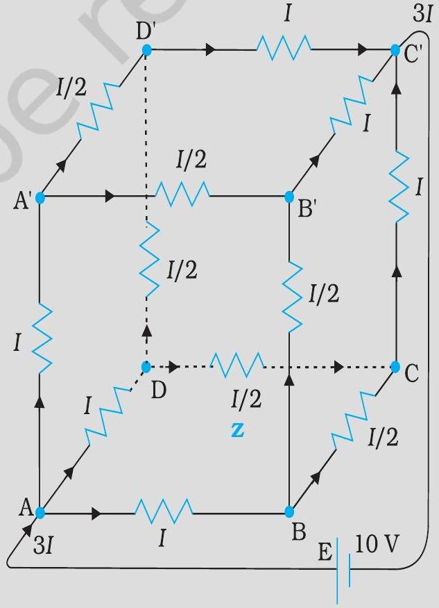
Determine the current in each branch of the network shown in Fig. 3.17.
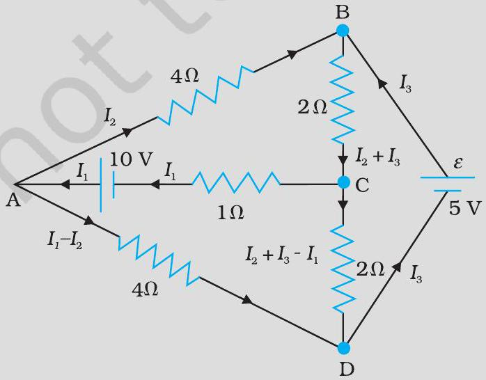
The four arms of a Wheatstone bridge (Fig. 3.19) have the following resistances: AB = 100 Ω, BC = 10 Ω, CD = 5 Ω, and DA = 60 Ω. A galvanometer of 15 Ω resistance is connected across BD. Calculate the current through the galvanometer when a potential difference of 10 V is maintained across AC.
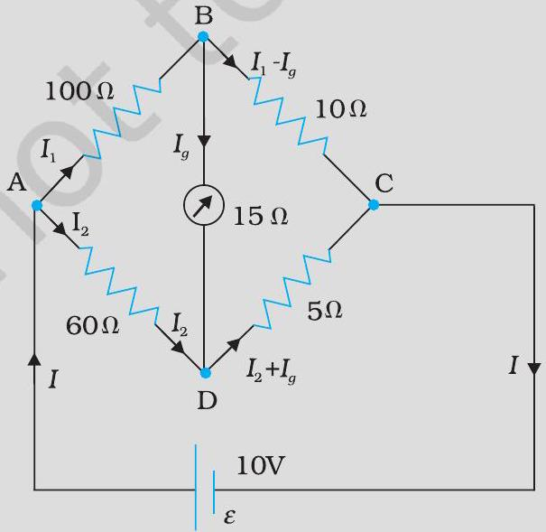
The storage battery of a car has an emf of 12 V. If the internal resistance of the battery is 0.4 Ω, what is the maximum current that can be drawn from the battery?
A battery of emf 10 V and internal resistance 3 Ω is connected to a resistor. If the current in the circuit is 0.5 A, what is the resistance of the resistor? What is the terminal voltage of the battery when the circuit is closed?
At room temperature (27.0 °C) the resistance of a heating element is 100 Ω. What is the temperature of the element if the resistance is found to be 117 Ω, given that the temperature coefficient of the material of the resistor is 1.70 × 10‑4 ° C‑1.
A negligibly small current is passed through a wire of length 15 m and uniform cross-section 6.0 × 10‑7 m2, and its resistance is measured to be 5.0 Ω. What is the resistivity of the material at the temperature of the experiment?
A silver wire has a resistance of 2.1 Ω at 27.5 °C, and a resistance of 2.7 Ω at 100° C. Determine the temperature coefficient of resistivity of silver.
A heating element using nichrome connected to a 230 V supply draws an initial current of 3.2 A which settles after a few seconds to a steady value of 2.8 A. What is the steady temperature of the heating element if the room temperature is 27.0 °C? Temperature coefficient of resistance of nichrome averaged over the temperature range involved is 1.70 × 10‑4 ° C‑1.
Determine the current in each branch of the network shown in Fig. 3.20:
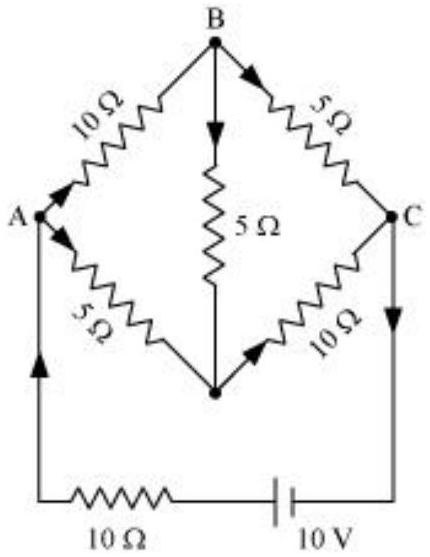
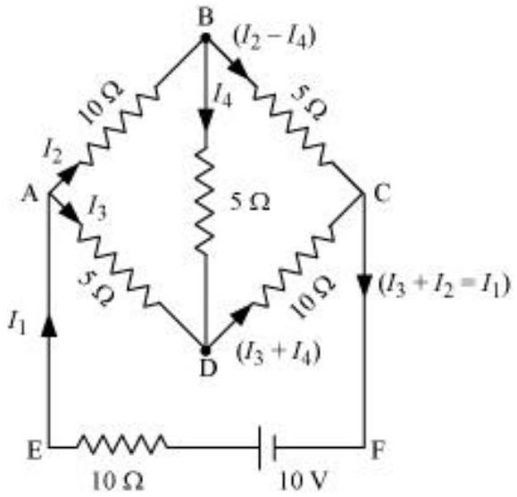
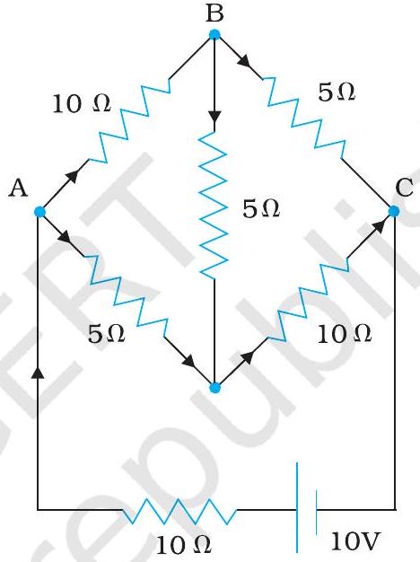
A storage battery of emf 8.0 V and internal resistance 0.5 Ω is being charged by a 120 V dc supply using a series resistor of 15.5 Ω. What is the terminal voltage of the battery during charging? What is the purpose of having a series resistor in the charging circuit?
The number density of free electrons in a copper conductor estimated in Example 3.1 is 8.5 × 1028 m‑3. How long does an electron take to drift from one end of a wire 3.0 m long to its other end? The area of cross-section of the wire is 2.0 × 10‑6 m2 and it is carrying a current of 3.0 A.
Three resistors 1 Ω, 2 Ω, and 3 Ω are combined in series. What is the total resistance of the combination? If the combination is connected to a battery of emf 12 V and negligible internal resistance, obtain the potential drop across each resistor.
Three resistors 2 Ω, 4 Ω and 5 Ω are combined in parallel. What is the total resistance of the combination? If the combination is connected to a battery of emf 20 V and negligible internal resistance, determine the current through each resistor, and the total current drawn from the battery.
In a metre bridge [Fig. 3.27], the balance point is found to be at 39.5 cm from the end A, when the resistor Y is of 12.5 Ω. Determine the resistance of X. Why are the connections between resistors in a Wheatstone or meter bridge made of thick copper strips? Determine the balance point of the bridge above if X and Y are interchanged. What happens if the galvanometer and cell are interchanged at the balance point of the bridge? Would the galvanometer show any current?
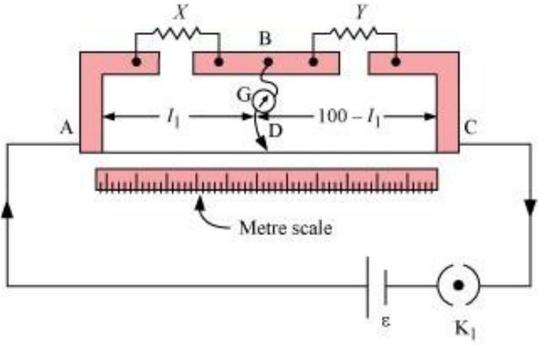
In a potentiometer arrangement, a cell of emf 1.25 V gives a balance point at 35.0 cm length of the wire. If the cell is replaced by another cell and the balance point shifts to 63.0 cm, what is the emf of the second cell?
The earth's surface has a negative surface charge density of 10‑9 C m‑2. The potential difference of 400 kV between the top of the atmosphere and the surface results (due to the low conductivity of the lower atmosphere) in a current of only 1800 A over the entire globe. If there were no mechanism of sustaining atmospheric electric field, how much time (roughly) would be required to neutralise the earth's surface? (This never happens in practice because there is a mechanism to replenish electric charges, namely the continual thunderstorms and lightning in different parts of the globe). (Radius of earth = 6.37 × 106 m.)
Six lead-acid type of secondary cells each of emf 2.0 V and internal resistance 0.015 Ω are joined in series to provide a supply to a resistance of 8.5 Ω. What are the current drawn from the supply and its terminal voltage? A secondary cell after long use has an emf of 1.9 V and a large internal resistance of 380 Ω. What maximum current can be drawn from the cell? Could the cell drive the starting motor of a car?
Two wires of equal length, one of aluminium and the other of copper have the same resistance. Which of the two wires is lighter? Hence explain why aluminium wires are preferred for overhead power cables. ( ρAl = 2.63 × 10‑8 Ω m, ρCu = 1.72 × 10‑8 Ω m, Relative density of Al = 2.7, of Cu = 8.9.)
What conclusion can you draw from the following observations on a resistor made of alloy manganin?
| Current A | Voltage V | Current A | Voltage V |
| 0.2 | 3.94 | 3.0 | 59.2 |
| 0.4 | 7.87 | 4.0 | 78.8 |
| 0.6 | 11.8 | 5.0 | 98.6 |
| 0.8 | 15.7 | 6.0 | 118.5 |
| 1.0 | 19.7 | 7.0 | 138.2 |
| 2.0 | 39.4 | 8.0 | 158.0 |
Answer the following questions: A steady current flows in a metallic conductor of non-uniform cross- section. Which of these quantities is constant along the conductor: current, current density, electric field, drift speed? Is Ohm's law universally applicable for all conducting elements? If not, give examples of elements which do not obey Ohm's law. A low voltage supply from which one needs high currents must have very low internal resistance. Why? A high tension (HT) supply of, say, 6 kV must have a very large internal resistance. Why?
Choose the correct alternative: Alloys of metals usually have (greater/less) resistivity than that of their constituent metals. Alloys usually have much (lower/higher) temperature coefficients of resistance than pure metals. The resistivity of the alloy manganin is nearly independent of/increases rapidly with increase of temperature. The resistivity of a typical insulator (e.g., amber) is greater than that of a metal by a factor of the order of (1022 / 103).
Given n resistors each of resistance R, how will you combine them to get the (i) maximum (ii) minimum effective resistance? What is the ratio of the maximum to minimum resistance? Given the resistances of 1 Ω, 2 Ω, 3 Ω, how will be combine them to get an equivalent resistance of (i) (11/3) Ω (ii) (11/5) Ω, (iii) 6 Ω, (iv) 611 Ω ? Determine the equivalent resistance of networks shown in Fig. 3.31.
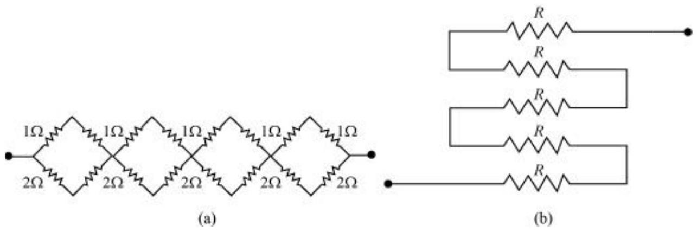
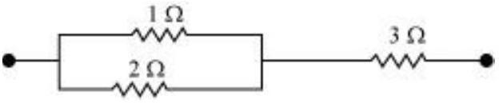
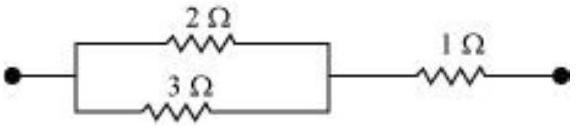
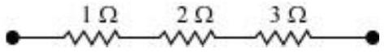
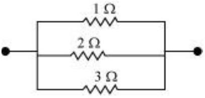
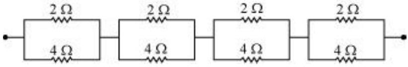
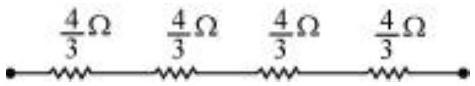
Determine the current drawn from a 12 V supply with internal resistance 0.5 Ω by the infinite network shown in Fig. 3.32. Each resistor has 1 Ω resistance.
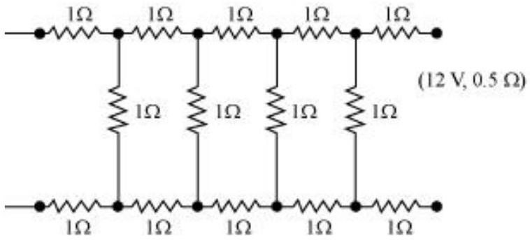
Figure 3.33 shows a potentiometer with a cell of 2.0 V and internal resistance 0.40 Ω maintaining a potential drop across the resistor wire AB. A standard cell which maintains a constant emf of 1.02 V (for very moderate currents up to a few mA) gives a balance point at 67.3 cm length of the wire. To ensure very low currents drawn from the standard cell, a very high resistance of 600 k Ω is put in series with it, which is shorted close to the balance point. The standard cell is then replaced by a cell of unknown emf ε and the balance point found similarly, turns out to be at 82.3 cm length of the wire. What is the value ε ? What purpose does the high resistance of 600 k Ω have? Is the balance point affected by this high resistance? Is the balance point affected by the internal resistance of the driver cell? Would the method work in the above situation if the driver cell of the potentiometer had an emf of 1.0 V instead of 2.0 V? Would the circuit work well for determining an extremely small emf, say of the order of a few mV (such as the typical emf of a thermo-couple)? If not, how will you modify the circuit?
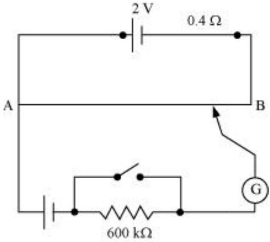
Figure 3.34 shows a potentiometer circuit for comparison of two resistances. The balance point with a standard resistor R = 10.0 Ω is found to be 58.3 cm , while that with the unknown resistance X is 68.5 cm. Determine the value of X. What might you do if you failed to find a balance point with the given cell of emf ε ?
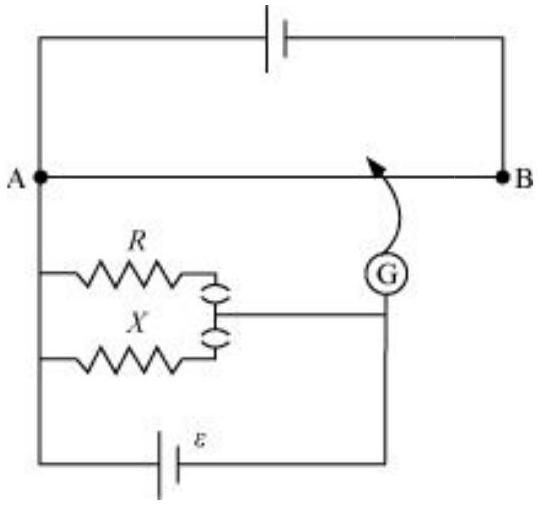
Figure 3.35 shows a 2.0 V potentiometer used for the determination of internal resistance of a 1.5 V cell. The balance point of the cell in open circuit is 76.3 cm. When a resistor of 9.5 Ω is used in the external circuit of the cell, the balance point shifts to 64.8 cm length of the potentiometer wire. Determine the internal resistance of the cell.
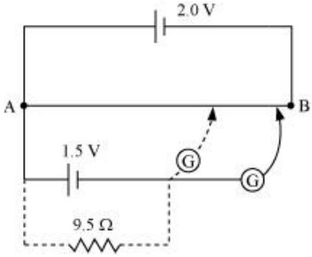